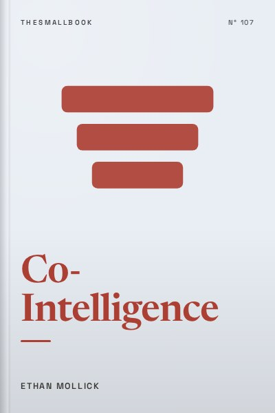

Library › Business & Startups
Co-Intelligence - Summary & Key Lessons

Living and working with AI. Treat it like a strange, brilliant co-worker, not a search engine.
📖 OPEN THE FULL INTERACTIVE BREAKDOWN →🌐 Read it in Hindi, Hinglish, Gujarati, Tamil & 22 more languages, with audio.
💡 The Big Idea
Ethan Mollick, a Wharton professor who has run hundreds of classroom experiments with AI, argues that large language models are not just another tool. They are a new kind of co-intelligence: alien, inconsistent, often brilliant and sometimes confidently wrong. The book offers four rules for working with them: always invite AI to the table, be the human in the loop, treat AI like a person but tell it what kind of person it is, and assume this is the worst AI you will ever use. Mollick then walks through AI as a creative partner, co-worker, tutor and coach, showing where it raises performance and where it quietly makes people lazy. His message is practical: learn by using it, keep your judgment sharp, and redesign work around what humans and AI each do best.
🧠 The 10 Key Lessons
Lesson 1: AI Is a Jagged Frontier
Chapter 1: Creating Alien Minds
AI capabilities do not form a neat line from easy to hard. Mollick calls the shape a jagged frontier: AI can write a strong essay or pass a professional exam, then fail at simple counting or invent a fake citation. Tasks that look similar to humans can sit on opposite sides of the frontier. The only way to know where the edge lies for your work is to test it yourself, repeatedly, on real tasks. People who assume AI is useless after one bad answer, or flawless after one good answer, both misread it. The frontier also moves quickly, so yesterday's failure may be today's strength.
📖 Example: In a study Mollick co-authored with Boston Consulting Group, consultants using GPT-4 completed realistic tasks faster and with higher quality on work inside the frontier. On a task deliberately designed to fall outside it, consultants who relied on AI were more likely to get the answer wrong than those who worked without it. Read the full example →
⚡ Do this: Pick three tasks from your week. Try each one with an AI assistant and grade the result honestly. Write down which side of the frontier each task falls on.
Lesson 2: Rule 1: Always Invite AI to the Table
Chapter 3: Four Rules for Co-Intelligence
Mollick's first rule is to try AI on everything you do, within ethical and legal limits, because you cannot know its usefulness in advance. Experimentation turns you into an expert on how AI fits your specific job, an expertise no outside consultant has. Daily use reveals surprising strengths, like brainstorming, summarising, drafting and role-playing, and sharp weaknesses. He estimates that about ten hours of hands-on use is when people start to develop real intuition. Avoiding AI does not protect you; it simply leaves you behind people who learned its quirks.
📖 Example: Mollick describes asking AI to help with tasks across his work: writing course materials, generating ideas for research, creating simulations for students and drafting emails. Some attempts failed, but each one taught him more about where it helped. His students who experimented the most found the most creative uses. Read the full example →
⚡ Do this: For the next seven days, try AI on at least one real task per day. Keep a short log of what worked, what failed and what surprised you.
Lesson 3: Rule 2: Be the Human in the Loop
Chapter 3: Four Rules for Co-Intelligence
AI makes mistakes confidently, and it can hallucinate facts, sources and numbers that sound plausible. Mollick insists that humans stay responsible for checking, judging and deciding. Being the human in the loop also means keeping your own skills sharp, because over-reliance can make people fall asleep at the wheel. The aim is not to verify every word forever but to know where the risks are and to apply your expertise where it matters. Your judgment becomes more valuable, not less, as AI produces more first drafts.
📖 Example: Mollick cites the case of lawyers in the United States who submitted a court filing with case citations invented by ChatGPT. They had not checked the sources, and the judge sanctioned them. The AI was useful for drafting, but the humans failed to stay in the loop. Read the full example →
⚡ Do this: Whenever AI gives you a fact, number or source you plan to use, verify it with one independent source before you rely on it.
Lesson 4: Rule 3: Tell AI Who It Is
Chapter 3: Four Rules for Co-Intelligence
AI responds better when you give it context and a role. Mollick suggests treating it like a person, while remembering it is not one, and telling it what kind of person to be: a sceptical editor, a patient tutor, a marketing expert for small Indian businesses. Specific instructions about audience, tone, format and constraints produce sharper results. Prompting is less about magic phrases and more about clear communication, the same skill that helps you brief a new colleague.
📖 Example: Mollick shows how a vague prompt like 'write a lesson plan' produces generic output, while a detailed prompt specifying the role, student level, learning goals and common misconceptions produces something a teacher can actually use. Read the full example →
⚡ Do this: Rewrite one prompt you use often. Add a role, the audience, the goal, the format you want and one example. Compare the results.
Lesson 5: Rule 4: This Is the Worst AI You Will Ever Use
Chapter 3: Four Rules for Co-Intelligence
AI models improve rapidly. Mollick advises assuming that whatever frustrates you today may be fixed soon, and that new capabilities will appear. This mindset prevents complacency and encourages continuous learning. It also means planning careers and organisations around a future where AI keeps getting better, not around today's limitations.
📖 Example: Mollick notes how earlier models struggled with tasks such as reasoning through maths problems or writing code, while newer models handle many of them well. Organisations that dismissed AI after early tests had to catch up later. Read the full example →
⚡ Do this: Revisit a task that AI failed at three months ago. Try it again with the latest model and note what changed.
Lesson 6: AI as a Creative Partner
Chapter 5: AI as a Creative
AI is surprisingly good at generating ideas. In tests of creativity, AI often produces more and more varied ideas than most humans. Mollick suggests using AI for divergent thinking: brainstorming many options, then applying human judgment to choose and refine. The risk is that everyone using the same tools may produce similar ideas, so pushing AI for unusual angles and adding personal experience matters.
📖 Example: In experiments at Wharton, AI-generated product ideas were rated highly by consumers, often outperforming ideas from students. Mollick encourages asking AI for dozens of ideas, then combining the best ones with your own insights. Read the full example →
⚡ Do this: Ask AI for 30 ideas for a problem you are working on. Pick the three most interesting and improve them with your own experience.
Lesson 7: AI as a Co-Worker: Centaurs and Cyborgs
Chapter 6: AI as a Coworker
Mollick describes two ways people work with AI. Centaurs divide tasks clearly: humans do some parts, AI does others. Cyborgs blend their work with AI continuously, switching back and forth within tasks. Both approaches can raise productivity. He also warns about 'secret cyborgs,' employees who use AI quietly because their organisations ban or ignore it, which hides valuable learning from the company.
📖 Example: In the BCG study, lower-performing consultants gained the most from AI, narrowing the gap with top performers. Mollick argues that organisations should encourage employees to share how they use AI rather than hiding it. Read the full example →
⚡ Do this: Decide whether you work more like a centaur or cyborg with AI. Share one useful AI workflow with a colleague or classmate this week.
Lesson 8: AI as a Tutor: Learning Gets Personal
Chapter 7: AI as a Tutor
AI can provide personalised tutoring at scale. Mollick believes it could help close learning gaps, offering explanations tailored to each student's level. However, students can also use AI to skip learning entirely, for example by having it write essays. He argues that education must change: more in-class practice, more active learning and assignments that use AI as a tool rather than banning it.
📖 Example: Mollick redesigned his own courses to require AI use, asking students to work with AI on projects while reflecting on what they learned. He found that students who engaged actively with AI learned more than those who used it passively. Read the full example →
⚡ Do this: When studying, ask AI to quiz you on a topic instead of explaining it. Answer first, then ask for feedback on your answers.
Lesson 9: AI as a Coach: Feedback on Demand
Chapter 8: AI as a Coach
AI can provide feedback on writing, presentations, code and plans instantly. Mollick suggests using AI to simulate difficult conversations, practise negotiations or rehearse interviews. While AI feedback is not perfect, it helps people practise more often. The key is to ask for specific, critical feedback rather than praise.
📖 Example: Mollick describes simulations where students practised negotiations with AI playing the other side, receiving feedback afterward. These exercises allowed practice that would be expensive or impossible with human partners alone. Read the full example →
⚡ Do this: Ask AI to play the role of an interviewer for a job or college admission. Practise answering, then ask for three specific improvements.
Lesson 10: Four Futures and Your Choices
Chapter 9: AI as Our Future
Mollick outlines possible futures: AI progress slows, AI improves steadily, AI improves exponentially, or AI reaches superintelligence. He argues that even in the slow scenario, AI will change work significantly. The best response is not fear or blind enthusiasm but active engagement: learning to use AI, shaping its use in organisations and preserving human judgment and values.
📖 Example: Mollick compares AI to previous general-purpose technologies such as electricity and the internet, which transformed work gradually but profoundly. Those who learned to use them early gained advantages. Read the full example →
⚡ Do this: Write down one way AI could change your field in five years. List one skill you will build now to stay valuable in that future.
✅ 5-Step Action Plan
- Use AI on one real task every day for a week and log the results.
- Verify every AI fact or source before using it.
- Rewrite your most-used prompt with role, audience, goal and format.
- Ask AI to quiz you instead of explaining a topic.
- Share one AI workflow with a colleague or classmate.
⚠️ When This Doesn't Work
Mollick writes from elite universities and consulting firms, where people have paid AI tools and strong digital skills. Many workers and students in India use AI on shared phones, with limited data, in regional languages where AI is weaker. AI can also widen gaps: those who already write and think well benefit most. Use AI to practise, not to skip the thinking you will need in exams and jobs.
💀 The Graveyard Proves It
💬 Best Quotes from Co-Intelligence
- “Assume this is the worst AI you will ever use.”
- “Always invite AI to the table.”
- “Be the human in the loop.”
Interactive version: mark lessons as read, listen in your language, share quote cards.